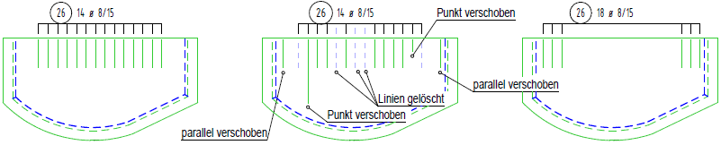

")
")
Normalerweise werden bei Änderungen an Bewehrungsstaffeln Anzahlen und die Positionierungen automatisch richtig gestellt. Sie können mit den Methoden des Konstruktionsprogramms (Linien, Verschieben etc.) Änderungen an Staffeln vornehmen.
|
Achtung: |
|
Der erste und der letzte Stab dürfen nicht gelöscht werden! Zusätzlich gilt bei Staffeln am Bogen, dass mindestens drei Stäbe übrig bleiben. |

So wird's gemacht:
§Stellen Sie die Form der Darstellung im Funktionsbereich ein.
|
|
|
|
|
|
Je ein Stab am Anfang und am Ende; zusätzlich einer in der Mitte. |
Jeweils drei Stäbe am Anfang und am Ende werden dargestellt. |
Es werden alle Stäbe dargestellt. |
Es wird nur ein Stab in der Mitte dargestellt. |
Es werden drei Stäbe in der Mitte dargestellt. |
Es werden nur der erste und der letzte Stab dargestellt. |
[1+1+1] |
[3+3] |
|
[0+1+0] |
[0+3+0] |
[1+0+1] |
|
Anfang und Ende werden durch kurze Striche dargestellt. Die Stiftnummer kann in [Option | SysDat | Formstahl | Verlegung Rundstahl → Stiftnummer kurze Begrenzung Staffel] eingestellt werden. |
|
|||


§Klicken Sie die Verlegung an, die wieder in den „Originalzustand“ versetzt werden soll. [Welche Gruppe?].
Das Programm stellt die Staffel zwischen dem ersten und letzten Stab wieder so dar, wie in [Option | SysDat → Formstahl] eingestellt. Gleichzeitig wird die Art der Darstellung geändert, wenn diese vom Ursprung abweicht.
Beispiel:
 |
||
Originalzustand. |
Mit dem Linienprogramm veränderte Darstellung. |
Vor dem Anklicken auf die Darstellungsoption (3+3) gestellt. |